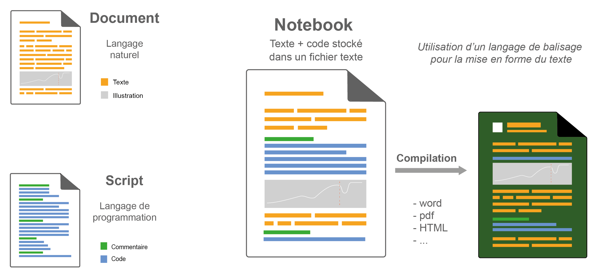
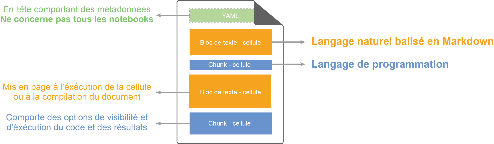
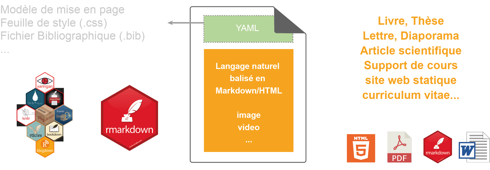
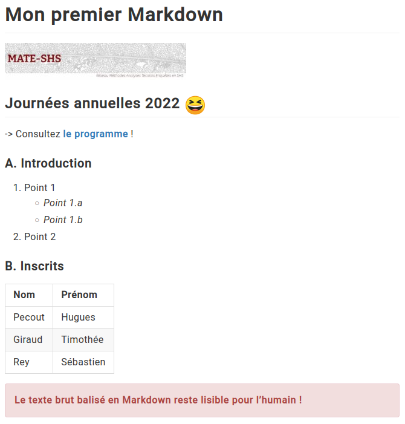

Ingénieurs d’études CNRS en sciences de l’information géographique
Le langage R comme outil principal
Production régulière de notebook R
Responsables de projet Rzine
Ingénieur de recherche
Geomatique/Informatique
Coord. du GT Notebook
Membre du projet Rzine
Le notebook
Définition
Interface de programmation qui permet de combiner des sections
en langage naturel et des sections en langage informatique
De nombreuses dénominations existent
:
Article exécutable
Document
computationnel
Document électronique
interactif
Bloc-note
Cahiers de
programmation
Cahier électronique
d’analyse
Calepin électronique
Carnet de code
Manifeste
algorithmique
Notebook !
…
Un notebook permet d’appliquer le paradigme de programmation
lettrée, qui facilite le partage, le travail collaboratif et la
reproductibilité
Une logique… des pratiques

La mise en forme du texte se fait à l’aide d’un langage de balisage
(Markdown, html…)
Anatomie d’un notebook
Simple fichier texte PLAIN

Notebook “quali”

Stylo (CRCEN) d’Human-Num
Le Markdown
Fichier Markdown (.md)
# Mon premier Markdown## Journées annuelles 2022 :satisfied:-> Consultez [**le programme**](https://ja-mate2022.sciencesconf.org/resource/page/id/1) !### A. Introduction1. Point 1-*Point 1.a*-*Point 1.b*3. Point 2### B. Inscrits| Nom | Prénom ||------|-----------|| Pecout | Hugues || Giraud | Timothée || Rey | Sébastien |:::danger**Le texte brut balisé en Markdown reste lisible pour l'humain !**:::
Texte mis en forme (sortie html)

Exemple
Le Rmarkdown
Fichier source (.rmd)
---title:"Rmarkdown - Notebook R"output: html_document---## R MarkdownThis is an R Markdown document. Markdown is a simple formatting syntax for authoring HTML, PDF, and MS Word documents. For more details on using R Markdown see <http://rmarkdown.rstudio.com>.When you click the **Knit** button a document will be generated that includes both content as well as the output of any embedded R code chunks within the document. You can embed an R code chunk like this:```{r chunk1, eval=TRUE, include=TRUE, echo=TRUE}# mon code Rsummary(cars)```## Including PlotsYou can also embed plots, for example:```{r pressure, echo=FALSE, fig.height=8, fig.width=10}plot(x = c(1,3,7,4,6), y = c(6,2,1,3,8), pch = 20, cex = 3, col= "red", xlab = "X", ylab = "Y") ```
Ce livre électronique, devenu un classique, propose des calculs et
graphiques recalculables à la volée (interactif), accessibles et
modifiables.
Au coeur du développement des notebooks,
l’émergence d’un concept pensé et mise en oeuvre (1977-78) par
Donald Knuth…
The Literate Programming
(LP) La programmation lettrée
Programmation lettrée
La programmation lettrée est une approche de la
programmation qui se veut différente du paradigme de programmation
structurée.
Instead of imagining that our main task is to instruct a computer what
to do, let us concentrate rather on explaining to human beings what we
want a computer to do. Donald Knuth, LP Website citations page
The practitioner of literate programming can be regarded as an essayist,
whose main concern is with exposition and excellence of style. Such an
author, with thesaurus in hand, chooses the names of variables carefully
and explains what each variable means. He or she strives for a
program that is comprehensible because its concepts have been introduced
in an order that is best for human understanding, using a
mixture of formal and informal methods that reinforce each other.
Donald Knuth, LP Website
citations page
Le paradigme de la programmation lettrée, tel qu’il a
été conçu par Knuth, s’éloigne dans son écriture de
l’ordonnancement imposé par l’ordinateur, et à la place autorise
les développeurs à utiliser un ordre imposé par la logique et le fil de
leur pensée.
Multiplication des notebooks et des plateformes
S. Lau, I. Drosos, J. M. Markel and P. J. Guo, “The Design Space of
Computational Notebooks: An Analysis of 60 Systems in Academia and
Industry,” 2020 IEEE Symposium on Visual Languages and Human-Centric
Computing (VL/HCC), 2020